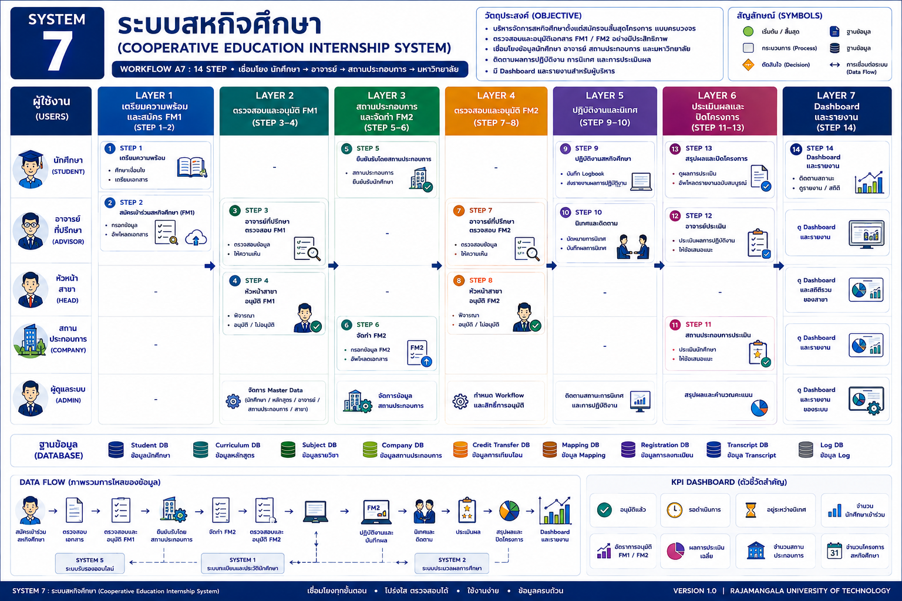

หน้าแรก › สหกิจศึกษา › ภาพรวมระบบสหกิจศึกษา
ภาพรวมระบบสหกิจศึกษา
แสดงภาพรวมกระบวนการสหกิจศึกษาแบบ Workflow กลาง ตั้งแต่เตรียมความพร้อม สมัคร อนุมัติ ปฏิบัติงาน นิเทศ ประเมินผล จนถึงรายงาน
SYSTEM 7: ระบบสหกิจศึกษา

แสดงภาพรวมกระบวนการสหกิจศึกษาแบบ Workflow กลาง ตั้งแต่เตรียมความพร้อม สมัคร อนุมัติ ปฏิบัติงาน นิเทศ ประเมินผล จนถึงรายงาน
